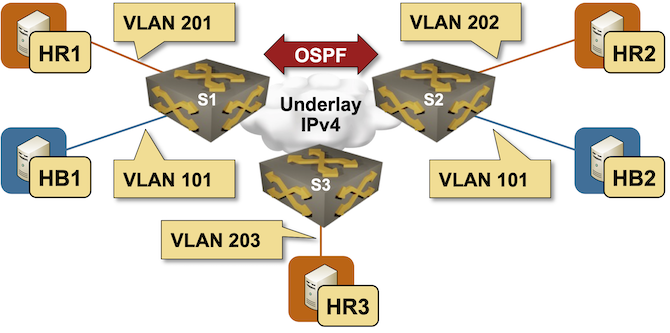

More Complex VXLAN Deployment Scenario
After finishing the Extend a Single VLAN Segment with VXLAN lab exercise, let’s do a slightly more complex scenario:
- We’re extending several VLANs across an underlay network;
- Some VLANs are not present on all switches;
- We’re using different VLAN tags for the Red bridge domain1

The lab exercise will help you clarify some key points about VXLAN technology:
- You can use many VLAN-to-VNI mappings on a single device
- While VLAN tags have local significance, VXLAN Network Identifiers (VNIs) have end-to-end significance2
- The VXLAN ingress replication list might have to be configured per VNI3
Device Requirements
You can use any device supported by the netlab OSPF and VLAN configuration modules. The device should support VXLAN with static ingress replication.
The Linux hosts attached to the lab switches are implemented with containers; your netlab installation will thus have to include Docker and containerlab4.
Start the Lab
Assuming you already set up your lab infrastructure:
- Change directory to
vxlan/2-complex - Execute netlab up
- Log into lab devices with netlab connect and verify that the IP addresses and the OSPF are properly configured.
Existing Device Configuration
- The switches in your lab (S1, S2, and S3) are preconfigured with red and blue VLANs. The VLANs use these VLAN tags:
| VLAN | switch | VLAN tag |
|---|---|---|
| red | S1 | 201 |
| S2 | 202 | |
| S3 | 203 | |
| blue | S1 | 101 |
| S2 | 101 |
- IPv4 addresses are configured on Linux hosts, switch loopback interfaces, and the interswitch link (details).
- The switches run OSPF in area 0 across the interswitch link (details).
Configuration Tasks
Using the commands you mastered in the Extend a Single VLAN Segment with VXLAN lab exercise, extend the blue VLAN between S1 and S2 and the red VLAN between S1, S2, and S3 using these VNIs:
| VLAN | VNI |
|---|---|
| red | 1000 |
| blue | 1001 |
Configure only the remote VTEPs participating in a VXLAN segment in the per-VNI ingress replication list (assuming your device supports per-VNI ingress replication lists).
Verification
- Ping HR2 and HR3 from HR1 using a command similar to netlab connect hr1 ping hr2
- Ping HB2 from HB1
Use the troubleshooting hints from the previous lab exercise if you can’t establish end-to-end connectivity.
Done? Continue to Routing between VXLAN Segments.
Cheating
- Shut down your lab with the netlab down command
- Start the lab from the
solution.ymltopology with the netlab up solution.yml command - Explore the device configurations
Reference Information
Lab Wiring
| Origin Device | Origin Port | Destination Device | Destination Port |
|---|---|---|---|
| s1 | Ethernet1 | s2 | Ethernet1 |
| s2 | Ethernet2 | s3 | Ethernet1 |
| s3 | Ethernet2 | s1 | Ethernet2 |
| s1 | Ethernet3 | hr1 | eth1 |
| s2 | Ethernet3 | hr2 | eth1 |
| s3 | Ethernet3 | hr3 | eth1 |
| s1 | Ethernet4 | hb1 | eth1 |
| s2 | Ethernet4 | hb2 | eth1 |
Lab Addressing
| Node/Interface | IPv4 Address | IPv6 Address | Description |
|---|---|---|---|
| s1 | 10.0.0.1/32 | Loopback | |
| Ethernet1 | 10.1.0.1/30 | s1 -> s2 | |
| Ethernet2 | 10.1.0.9/30 | s1 -> s3 | |
| Ethernet3 | [Access VLAN red] s1 -> hr1 | ||
| Ethernet4 | [Access VLAN blue] s1 -> hb1 | ||
| Vlan201 | VLAN red (201) -> [hr1] | ||
| Vlan101 | VLAN blue (101) -> [hb1,hb2,s2] | ||
| s2 | 10.0.0.2/32 | Loopback | |
| Ethernet1 | 10.1.0.2/30 | s2 -> s1 | |
| Ethernet2 | 10.1.0.5/30 | s2 -> s3 | |
| Ethernet3 | [Access VLAN red] s2 -> hr2 | ||
| Ethernet4 | [Access VLAN blue] s2 -> hb2 | ||
| Vlan202 | VLAN red (202) -> [hr2] | ||
| Vlan101 | VLAN blue (101) -> [hb1,s1,hb2] | ||
| s3 | 10.0.0.3/32 | Loopback | |
| Ethernet1 | 10.1.0.6/30 | s3 -> s2 | |
| Ethernet2 | 10.1.0.10/30 | s3 -> s1 | |
| Ethernet3 | [Access VLAN red] s3 -> hr3 | ||
| Vlan203 | VLAN red (203) -> [hr3] | ||
| hr1 | |||
| eth1 | 172.16.0.4/24 | hr1 -> [s1] | |
| hr2 | |||
| eth1 | 172.16.0.5/24 | hr2 -> [s2] | |
| hr3 | |||
| eth1 | 172.16.0.6/24 | hr3 -> [s3] | |
| hb1 | |||
| eth1 | 172.16.1.7/24 | hb1 -> [s1,hb2,s2] | |
| hb2 | |||
| eth1 | 172.16.1.8/24 | hb2 -> [hb1,s1,s2] |
OSPF Routing (Area 0)
| Router | Interface | IPv4 Address | Neighbor(s) |
|---|---|---|---|
| s1 | Loopback | 10.0.0.1/32 | |
| Ethernet1 | 10.1.0.1/30 | s2 | |
| Ethernet2 | 10.1.0.9/30 | s3 | |
| s2 | Loopback | 10.0.0.2/32 | |
| Ethernet1 | 10.1.0.2/30 | s1 | |
| Ethernet2 | 10.1.0.5/30 | s3 | |
| s3 | Loopback | 10.0.0.3/32 | |
| Ethernet1 | 10.1.0.6/30 | s2 | |
| Ethernet2 | 10.1.0.10/30 | s1 |
-
Using different (per-switch) VLAN tags for the same bridge domain is confusing and thus usually not a good idea, but you could easily encounter this challenge in migration/merger scenarios. ↩
-
Theoretically, you could reuse a VNI for multiple bridge domains (as long as they are not used on the same device), but there’s no good reason to do that considering the 24-bit address space. Always use globally-unique VNIs. ↩
-
Configuring an excessive ingress replication list on a VXLAN ingress switch will not break the network; it will “only” waste bandwidth. ↩
-
Use the netlab install containerlab command on Ubuntu/Debian to install them. ↩